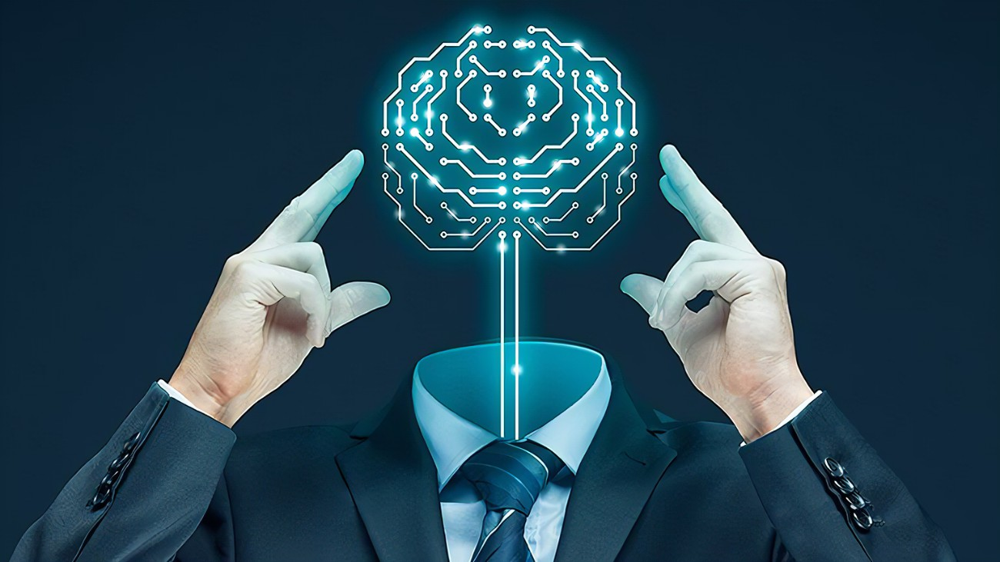

Historia sztucznej inteligencji
Co to jest sztuczna inteligencja? Sztuczna inteligencja (AI) to koncepcja, która w ostatnich latach staje się coraz bardziej rozpowszechniona. Dziedzina sztucznej inteligencji stale się rozwija, dzięki czemu jest to technologia, która jest zarówno ekscytująca, jak i wymagająca. Wielu spekulowało na temat definicji sztucznej inteligencji i sposobu jej działania. Wielu wierzy, że sztuczna inteligencja to przyszłość komputerów i zrewolucjonizuje ludzkie myślenie i zachowanie. Niektórzy badacze sugerowali nawet, że sztuczna inteligencja w końcu całkowicie zastąpi ludzi. Sztuczna inteligencja (AI) umożliwia przede wszystkim maszynom uczenie się na podstawie doświadczeń, adaptację do nowych danych i wykonywanie zadań podobnych do ludzkich. Typowymi przykładami AI, o których dziś słyszymy są na przykład komputery grające w szachy, samojeżdżące samochody. Technologia ta w dużej mierze polega na głębokim uczeniu i przetwarzaniu języka naturalnego. Jak wygląda historia ai (artificial intelligence, AI)? Sztucznej inteligencji- Historia powstania Jak rozpoczęła się historia sztucznej inteligencji? Pod koniec XIX wieku komputery elektroniczne były rozwijającą się technologią. W tym okresie brytyjski matematyk George Boole opracował pierwsze równania logiczne. Równania te posłużyły za podstawę późniejszych koncepcji związanych ze sztuczną inteligencją. Jego praca pomogła rozwinąć ideę tworzenia maszyn z inteligencją podobną do ludzkiej. Jednym z najważniejszych współpracowników w dziedzinie sztucznej inteligencji była Ada Lovelace. Była córką Lorda Byrona i siostrą Percy Bysshe Shelleya. W związku z tym od najmłodszych lat znała pojęcia filozofii i matematyki. W 1843 r. przedstawiła londyńskiemu Towarzystwu Królewskiemu artykuł, w którym badała, jak modelować skomplikowane obliczenia matematyczne na tym, co znamy obecnie jako równania logiczne Boole’a. Stało się to później jedną z najważniejszych koncepcji rozwoju ai. Historia sztucznej inteligencji nabrała tempa w późniejszych latach. Jeden z pierwszych komputerów zaprojektowanych do przetwarzania matematycznego został stworzony przez Josephusa Roberta Franklina Dealeya Adę King Lovelace w 1866 roku w biurze prof. Charlesa Babbage’a na Uniwersytecie w Cambridge. Nazwa tego komputera to „Silnik analityczny” lub bardziej znany jako „pierwszy komputer”. Został zaprojektowany do wykonywania obliczeń matematycznych i jest uważany za jeden z największych wynalazków, jakie kiedykolwiek wymyśliła ludzkość. Pracując na Uniwersytecie Harvarda, William Gray Walter spotkał najlepszego studenta lorda Ravello, Warrena McCullocha i najlepszego naukowca Herberta Waltera, Adolfa Neumana. Ze względu na niezwykłe zdolności neuronalne i matematyczne, zostali asystentami badawczymi Waltera. Poprzez obserwacje i eksperymenty Walter stworzył nową naukę zwaną sieciami neuronowymi; to utorowało drogę do rozwoju sztucznej inteligencji i doprowadziło do tego, że Walter stał się znany jako ojciec sztucznej inteligencji. Sztuczna inteligencja- Ciekawostki AI wystartowała w latach 40. XX wieku jako sposób na pomoc personelowi wojskowemu w wykonywaniu szybszych obliczeń. W 1946 r. rząd amerykański zaprosił 15 badaczy do pracy nad opracowaniem komputera elektronicznego na Uniwersytecie Harvarda. W następnym roku narodził się komputer elektroniczny, który utorował drogę do znacznie szybszych obliczeń. Dzisiaj komputery elektroniczne są tak powszechne, że prawie niewidoczne dla społeczeństwa. Jednak nie byłyby tak potężne bez niezliczonych godzin badań i rozwoju, które je poprzedziły. To samo można powiedzieć o sztucznej inteligencji; bez rozwoju wojskowego sztuczna inteligencja byłaby znacznie mniej użyteczna dla całego społeczeństwa. Sztuczna inteligencja jest teraz stosowana na wiele różnych sposobów, od gier komputerowych po samojezdne samochody. Firmy wykorzystują sztuczną inteligencję do bardziej efektywnego analizowania danych i dostarczania informacji zwrotnych na temat procesów osiągania postępów. Ponadto wiele osób wykorzystuje sztuczną inteligencję do analizowania informacji finansowych lub przewidywania trendów rynkowych. Sztuczna inteligencja jest również pomocna w wielu innych dziedzinach, takich jak opieka zdrowotna czy edukacja. Możliwości są nieograniczone! John McCarthy a Sztuczna inteligencja Kto wymyślił sztuczną inteligencję? Sztuczna inteligencja odnosi się do symulacji inteligencji w maszynie. Odkąd w latach 40. pojawiła się koncepcja sztucznej inteligencji, wielu badaczy poświęciło swoje życie na jej doskonalenie. Jednym z takich badaczy jest John McCarthy, ojciec sztucznej inteligencji. McCarthy opracował wiele pomysłów, które stanowią podstawę nowoczesnych systemów sztucznej inteligencji; Koncentrując się na uczeniu maszynowym i sieciach neuronowych, poczynił znaczne postępy w swojej dziedzinie. Kiedy powstała sztuczna inteligencja? W 1945 r. John McCarthy wprowadził termin „sztuczna inteligencja” w przemówieniu w Dartmouth College. Koncepcja sztucznej inteligencji była w tym czasie wciąż stosunkowo nowa, ale McCarthy’emu przypisuje się wynalezienie tego terminu. Używał go w odniesieniu do badania maszyn, które wykonują zadania, które wydają się podobne do tych wykonywanych przez ludzi. W tym czasie wiele osób uważało komputery za formę sztucznej inteligencji. W rezultacie prace McCarthy’ego nad uczeniem maszynowym i sieciami neuronowymi wpłynęły na przyszłe badania nad sztuczną inteligencją. McCarthy rozpoczął pracę nad sztuczną inteligencją w 1950 r. na polecenie marynarki wojennej Stanów Zjednoczonych. Był częścią wysiłków na rzecz opracowania algorytmu, który mógłby rozwiązywać problemy za pomocą logiki i pamięci. Doprowadziło to do ulepszeń w uczeniu maszynowym i sieciach neuronowych. Ta praca z kolei zainspirowała dalsze badania nad algorytmami AI. Doprowadziło to również do powstania kilku programów komputerowych, które odniosły sukces we wczesnych latach amerykańskiego programu kosmicznego. Praca nad sztuczną inteligencją przyniosła McCarthy’emu kilka nagród za życia, w tym jedną od prezydenta Dwighta Eisenhowera. Praca McCarthy’ego nad uczeniem maszynowym i sieciami neuronowymi również doprowadziła do znaczących postępów w jego dziedzinie jako całości. Jest jednak postacią kontrowersyjną w środowisku AI ze względu na swoje poglądy na prawa człowieka. W latach 60. McCarthy współpracował z innymi badaczami nad opracowaniem komputera elektronicznego do użytku przez rząd USA. W związku z tym niektórzy uważali, że lekceważy prawa człowieka i chroni agendę sojuszników Ameryki w okresie zimnej wojny. Zinterpretowali jego poparcie dla Josepha McCarthy’ego jako dowód na to, że on również nie przestrzega praw człowieka. McCarthy jest znany jako jeden z ojców współczesnej sztucznej inteligencji dzięki swojemu licznemu wkładowi w informatykę i teorię cybernetyki. Jego praca niewątpliwie miała duży wpływ na przyszły rozwój w tej dziedzinie; jednak niektórzy uważają, że praca McCarthy’ego jest nieetyczna ze względu na jego poglądy na prawa człowieka. Niezależnie od reputacji wśród entuzjastów sztucznej inteligencji, McCarthy miał głęboki wpływ zarówno na informatykę, jak i samą ludzkość. Sztuczna inteligencja- Podsumowanie Z biegiem czasu historia AI jak i sama sztuczna inteligencja stała się integralną częścią współczesnego życia i technologii. Obecnie programy AI są szeroko stosowane we wszystkich aspektach nowoczesnych technologii, takich jak komunikacja, transport, działania wojenne i leczenie. Przyszłość dla sztucznej inteligencji wygląda bardzo świetlanie! Chociaż sztuczna inteligencja istnieje już od dziesięcioleci, wciąż jest wiele do zrobienia w tej dziedzinie. Istnieje wiele różnych definicji sztucznej inteligencji, co utrudnia naukowcom uzgodnienie, czym jest sztuczna inteligencja. Historia AI ma wiele gałęzi rozwoju. Niemniej jednak ta dziedzina nie wykazuje oznak spowolnienia w najbliższym czasie- powiększa się tylko dzięki innowacjom takim jak smartfony!